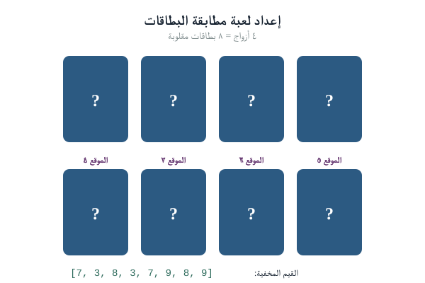
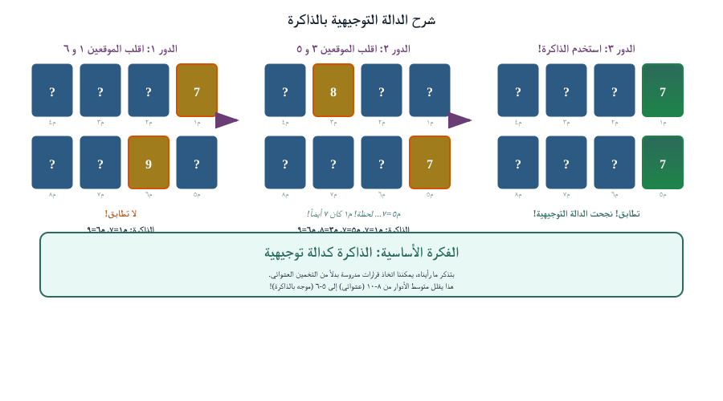
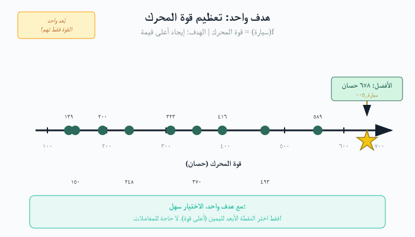
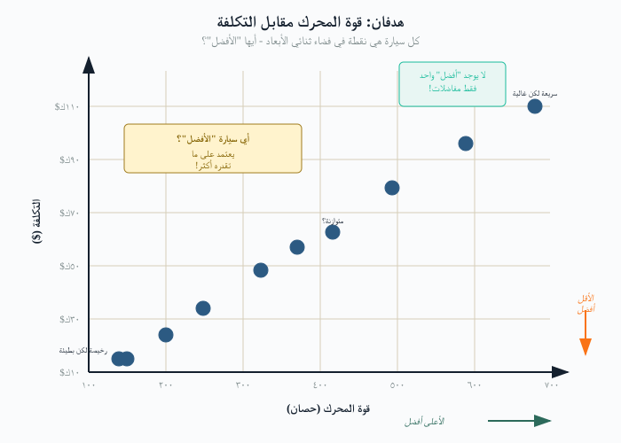
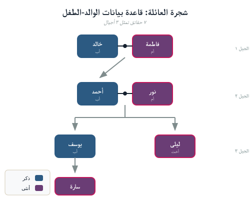
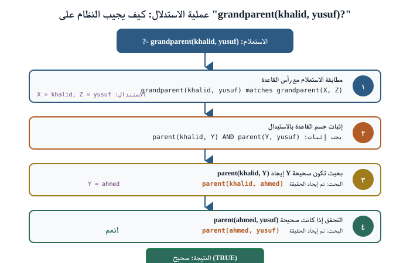
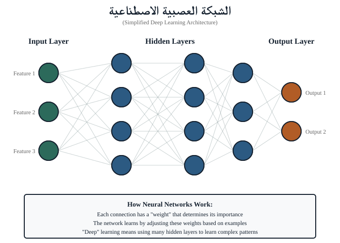

لعبة قلب البطاقات
ثماني بطاقات مقلوبة على طاولة. خلفها أربعة أزواج — شكلٌ على كلّ بطاقة، وله شكلٌ مطابق على بطاقة أخرى واحدة فقط. مهمّتك أن تجد الأزواج الأربعة بقلب بطاقتين في كل دور. إن تطابقتا تحتفظ بهما. وإلّا تقلبهما وتحاول تذكّر ما كان أين.

في حركتك الأولى ليس لديك أيّ معلومة. تختار بطاقتين. كم حركة أولى متمايزة ممكنة؟ ثمانية خيارات للأولى وسبعة للثانية — 56 زوجًا مرتّبًا، أو 28 غير مرتّب. مع رزمة كاملة من 52 بطاقة و26 زوجًا، الرقم فلكيّ: حركات أولى أكثر من الثواني في يومك.
مجموعة «كل الحركات الممكنة» تُسمّى فضاء البحث. كل مسألة ذكاء اصطناعي يمكن صياغتها كبحث في فضاء. السؤال المثير هو كيف تبحث بذكاء.
جرّب
العب عرض لعبة الذاكرة دقيقة أو دقيقتين. لاحظ أنك لا تبحث عشوائيًا — تستخدم الذاكرة. هذا الحدس هو أساس البحث الاستدلالي، وسنصل إليه بعد قليل.
فضاء البحث، القيود، الاستدلالات

ثلاثة مفاهيم تمتدّ عبر كلّ نظام ذكاء اصطناعي قائم على البحث:
- فضاء البحث. مجموعة كل الحالات أو الحركات الممكنة. ضخم دائمًا. لانهائي أحيانًا.
- القيود. قواعد تستبعد أجزاءً من الفضاء. «على السيارة البقاء في مسارها». «على الجدول ألا يُسنِد المعلّم نفسه إلى صفّين في وقت واحد». القيود تجعل الفضاء عمليًا.
- الاستدلالات. قواعد ترجيحية تقترح أين ننظر أوّلًا. ليست مضمونة الصحّة، لكنها عادةً جيّدة بما يكفي لجعل المسألة الكبيرة قابلة للإدارة.
في لعبة البطاقات: فضاء البحث كل تتابعات الحركات الممكنة؛ القيد «تقلب اثنتين في كل دور»؛ الاستدلال «إن تذكّرتَ دائرة في الموضع 3 وأخرى في 7، اقلبهما تاليًا». اللعب العشوائي يحلّها لكن ببطء. الاستدلال بالذاكرة يحلّها بسرعة.
البحث الموجَّه وغير الموجَّه

البحث غير الموجَّه بحثٌ بلا معرفة إضافية. تستكشف بانتظام — بترتيب، بترتيب عشوائي، عرضًا، عمقًا — لكن لا شيء يُخبرك أيّ خيار أكثر وعدًا. يعمل. بطيء على الفضاءات الكبيرة.
البحث الموجَّه يستخدم استدلالًا للتركيز على الأجزاء الواعدة أوّلًا. استدلال الذاكرة في لعبة البطاقات مثالٌ مثالي. ومثله «اتبع النهر إلى البحر حين تضلّ في غابة» — لا تبحث عشوائيًا، بل تستخدم معرفة خلفية للتوجيه إلى اتجاه مفيد.
شاهد الفرق
عرض الاستدلالات يُشغّل ثلاث استراتيجيات جنبًا إلى جنب على نفس لعبة البطاقات: عشوائي، متسلسل، استدلال الذاكرة. لاحظ كم تتقدّم استراتيجية الذاكرة بسرعة. هذه الفجوة، مكبَّرة، هي سبب عمل GPS وسبب تشغيل برامج الأمثلة لسلسلة التوريد.
الأمثلة بهدف واحد
قريبٌ من البحث هو الأمثلة: لا إيجاد أيّ حلّ، بل إيجاد الأفضل وفقًا لمقياس. أبسط صورة هدف واحد: شيء واحد للتعظيم أو التقليل.

«اختر السيارة الأعلى قدرة حصانية». تافه — رتّب القائمة فقط. النهج نفسه يعمل لأيّ رقم تحاول تعظيمه: الإيرادات، الدقّة، الإنتاجية، زمن الاستجابة. مسائل الهدف الواحد سهلة الحلّ وسهلة النقاش، لأن لها إجابة واحدة صحيحة.
المأخذ: الهدف الواحد نادرًا ما يكون واقعيًا. السيارة الأعلى قدرة حصانية قد تكون الأغلى أيضًا، أو الأسوأ في الوقود.
الأهداف المتعدّدة وحدود باريتو
القرارات الواقعية تتضمّن دائمًا تقريبًا أهدافًا متعارضة. تريد قدرة حصانية وتكلفة منخفضة. تريد دقّة وزمن استجابة منخفض. تريد خصوصية وراحة الذكاء الاصطناعي المستضاف.

حين يتعارض هدفان، لا تفوز سيارة واحدة. بعضها مهيمَن عليه — سيارة أخرى أفضل في المحورين. تلك يجب ألا تُختار. السيارات المتبقّية تُكوِّن حدّ باريتو: كلٌّ منها الأفضل في مفاضلة ما بين القدرة والتكلفة. لا واحدة منها خاطئة؛ الاختيار يعتمد على أيّ مفاضلة تهمّك أكثر.

شاهده تفاعليًا
مستكشف دالة الهدف يُتيح تعديل معايير السيارات ومشاهدة حدّ باريتو يتحدّث مباشرة. هو الحدس الذي تستخدمه أصلًا حين تقارن خيارين على التكلفة مقابل الجودة — مُصاغًا فقط.
للقائد: كل عرض من بائع ذكاء اصطناعي يتضمّن مفاضلات. حين يُرونك منحنى واحدًا فقط («دقّتنا»)، اسأل ماذا يقايضون للحصول عليه. تكلفة؟ زمن استجابة؟ عدالة؟ خصوصية؟ لا يوجد نظام ذكاء اصطناعي يُعظِّم كل شيء دفعة واحدة. عدسة حدّ باريتو تُساعدك على رؤية الأبعاد التي يقبل البائع خسائر فيها بصمت.
الأنظمة المبنية على المعرفة
لدى خالد قاعدة بيانات تَسرد الآباء وأبناءهم. القاعدة تعرف أن خالد والد سارة، وأن سارة والدة يوسف. تسأل: «من هم أحفاد خالد؟»
لا تستطيع القاعدة الإجابة. لا يوجد عمود «حفيد». المعلومة ضمنية في البيانات — تستطيع اشتقاقها — لكن القاعدة لا تعرف كيف. للإجابة عن ذلك السؤال تحتاج إلى بيانات + قواعد.

هذا قلب النظام المبني على المعرفة (KBS). ثلاثة مكوّنات:
- بيانات. الحقائق. «خالد والد سارة. سارة والدة يوسف».
- قواعد. المعرفة العامّة. «X جدّ Z إذا كان X والد Y وكان Y والد Z».
- استعلام. السؤال. «من هم أحفاد خالد؟»

النظام المعرفي يتيح للآلة الإجابة عن الاستعلام بدمج القواعد بالبيانات. هذا نمط الاستدلال نفسه الذي قاد الأنظمة الخبيرة في الثمانينيات. صارم، قابل للتفسير، ومثاليّ حين تكون القواعد واضحة — لا حين تكون مبهمة أو متناقضة.

جرّب
عرض شجرة العائلة والاستدلال يَعرض قواعد الجدّ والإخوة خطوةً بخطوة. شاهد القواعد تنطلق، وحقائق جديدة تظهر، ولاحظ أن KBS يستطيع تفسير كلّ إجابة يُعطيها — «استنتجتُ X لأن القاعدة R انطلقت بالحقيقتين F1 وF2». تلك القابلية للتفسير سبب رئيسي لاختيار KBS على ML في بعض المسائل.
أين تظهر الأنظمة المعرفية في عملك
ثلاثة استخدامات حكومية ملموسة حيث يكون النظام المعرفي الإجابة الصحيحة، لا التعلّم العميق:
دعم التشخيص الطبي
عَرَض + نتيجة فحص ← تشخيصات محتملة. يرى الطبيب سلسلة الاستدلال («رُفع لأن المريض لديه X مع Y، ما يستدعي Z معًا») ويستطيع الاعتراض. الصناديق السوداء لتعلّم الآلة تُعاني مع متطلّب التفسير الذي يطلبه الطبّ عادةً.
التحكّم بالوصول
«هل يستطيع المستخدم U الوصول إلى المورد R؟» مُكوَّن كقواعد على الأدوار والسمات والسياق. قابل للتدقيق، قابل للتفسير، سهل التحديث حين تتغيّر السياسة. الطريقة الصحيحة للتعامل مع «من يرى ماذا» في معظم المؤسّسات.
الاستدلال القانوني
الأهلية لمنفعة، انطباق نظام، استحقاق منصب. هذه قواعد في كتاب الأنظمة. KBS يُكوِّنها بأمانة يُعطيك نظامًا يُنتج الإجابة نفسها التي يُنتجها النظام، في كل مرّة، مع استشهاد بالقاعدة التي انطلقت.
للقادة
حين تكون مسألة لها قواعد واضحة ومتطلّب تفسير، KBS غالبًا أفضل من نموذج تعلّم الآلة — أرخص، أكثر شفافية، أسهل صيانة. لا تمتدّ يدك إلى «الذكاء الاصطناعي» انعكاسيًا. امتدّ إلى النوع الصحيح منه.
أنماط تعلّم الآلة الثلاثة
حين لا تكون القواعد واضحة، تترك للنظام أن يتعلّم من البيانات. ثلاث نكهات:

التعلّم المُشرَف
تُقدّم أمثلةً مع الإجابة الصحيحة مرفقة. «هذه 10,000 رسالة مزعجة، وهذه 10,000 ليست. تعلّم التمييز». معظم تعلّم الآلة في الإنتاج مُشرَف. ممتاز حين تملك بيانات موسومة؛ بلا فائدة دونها.
التعلّم غير المُشرَف
تُقدّم بيانات بلا وسوم وتطلب من النظام إيجاد بنية. «جمِّع هؤلاء العملاء في شرائح حسب سلوكهم». مفيد للاستكشاف، تحليلات العملاء، كشف الشذوذ. لا يستطيع إخبارك إن كانت المجموعات التي وجدها ذات معنى — أنت فقط من يستطيع.
التعلّم التعزيزي
تُقدّم بيئة وإشارة مكافأة. النظام يجرّب أفعالًا، يرى ما يعمل، يتحسّن. الأكثر «شكلًا ذكائيًا» في الثلاثة. أمثلة شهيرة: AlphaGo، الروبوتات، التسعير الديناميكي. صعب نشره في مجالات الأخطاء فيها مكلفة — على النظام ارتكاب كثير منها ليتعلّم.
التصنيف كحدود قرار
المهمّة الأكثر شيوعًا في التعلّم المُشرَف هي التصنيف: عند مدخل، تنبّأ بأي فئة ينتمي. مزعج أم لا. احتيال أم لا. صورة كلب أم قطّة.
مفاهيميًا، كل التصنيف يفعل الشيء نفسه: يرسم خطًّا عبر فضاء خصائص بحيث تنتمي الأمثلة على جانبٍ إلى فئة وعلى الجانب الآخر إلى فئة أخرى.
شاهده مباشرة
عرض مقارنة خوارزميات تعلّم الآلة يُولِّد مجموعات بيانات ويتيح مشاهدة تشكُّل حدود القرار لعدّة خوارزميات. البيانات نفسها تُنتج حدودًا مختلفة بشكل لافت بحسب الخوارزمية. هذا ليس عيبًا — إنها المفاضلة المركزية في تعلّم الآلة.
الانحدار التدرّجي — المشي معصوب العينين
أنت معصوب العينين على تضاريس متموّجة. مهمّتك إيجاد أدنى نقطة. لا ترى، لكنك تشعر بأيّ اتجاه تميل قدمك للأسفل. تخطو خطوة صغيرة في ذلك الاتجاه، ثم تشعر مجدّدًا، ثم تخطو، ثم تشعر. وفي النهاية تصل إلى وادٍ.

ذلك المشي معصوبَ العينين هو الانحدار التدرّجي. «التضاريس» مقياس لمقدار خطأ النموذج حاليًا — دالة الخسارة. «أدنى نقطة» هي تكوين معاملات النموذج الذي يُقلِّل الخسارة. «الإحساس بالاتجاه المنحدر» هو حساب التدرّج. كل تدريب حديث لتعلّم الآلة يفعل هذا، مليارات المرّات.
لاحظ الصلة بمواد أمثلة اليوم 4: دالة الخسارة هي مجرّد دالة هدف يحاول النموذج تقليلها. الفكرة نفسها بزيٍّ مختلف.
دوال التفعيل واللاخطية
لو كانت الشبكة العصبية مجرّد تكديس عمليات خطّية — ضرب بأوزان، جمع، ضرب مجدّدًا — لأمكن إثبات رياضيًا أن التكديس كله يكافئ عملية خطّية واحدة. مهما كانت الطبقات، ستحصل على خطّ واحد كحدّ قرار. وهذا لا يُصنِّف شيئًا سوى أبسط البيانات.
ما يُعطي الشبكات العصبية العميقة قوّتها هو اللاخطية. بعد كل خطوة خطّية، تطبّق الشبكة دالة لاخطية — تُسمّى دالة التفعيل — تثني المخرَج. الأكثر شيوعًا ReLU (تصفير السوالب، إبقاء الموجبات)، وSigmoid (الضغط بين 0 و1)، وTanh (الضغط بين -1 و1).
صوّرها
مُصوِّر دوال التفعيل يتيح سحب المدخلات ومشاهدة كل دالة تُعيد تشكيل المخرَج لحظيًّا. الحدس المكتسب من خمس دقائق مع هذا العرض يُساوي فصلًا من الشرح.
الشبكات العصبية هي رسوم DAG
تذكّر من اليوم 3: الرسم الموجَّه اللادوري (DAG) تدفّق حوسبة كل خطوة فيه تعتمد على خطوات سابقة، ولا حلقات. خطوط البيانات DAG. أنظمة البناء DAG. والشبكة العصبية كذلك.

كل نُويرون عقدة. الوصلات بينها حواف. تتدفّق البيانات من المدخلات عبر الطبقات الخفيّة إلى المخرجات، بلا عودة. هذا التعريف الحرفيّ لرسم DAG.
كون الشبكات العصبية رسوم DAG ليس استعارة. هذا سبب براعة GPU في تشغيلها (رسوم DAG تتوازى بشكل جميل، كما رأينا في اليوم 3). وهذا سبب استخدام أُطر مثل TensorFlow وPyTorch «رسوم حساب» داخليًا. وهذا سبب عودة مفهوم اليوم 3 (الخطوط المتوازية) في اليوم 4 (التعلّم العميق) — نفس الشكل، تطبيق مختلف.
الانتشار الخلفي بالعربية
تدريب الشبكة العصبية يعني تعديل أوزان كلّ تلك الحواف بحيث يقترب المخرَج من الإجابة الصحيحة. الانتشار الخلفي هو الخوارزمية التي تكتشف، لكلّ وزن: «إن غيّرتُكَ قليلًا، هل تصير الإجابة أكثر صوابًا أم أقلّ؟» تعمل بالمشي عبر رسم DAG عكسًا من المخرَج إلى المدخلات، مُوزِّعةً اللوم على كل وزن في الطريق. مع الانحدار التدرّجي، هكذا تتعلّم الشبكة من أخطائها.
التجريد الطبقي
أجمل ما في الشبكات العصبية العميقة — وسبب نجاحها على مهام كالتعرّف على الصور التي قاومت 50 سنة من المقاربات اليدوية — هو أن الطبقات المتعاقبة تتعلّم خصائص أكثر تجريدًا تباعًا.
في شبكة التعرّف على الصور:
- الطبقة 1 تتعلّم اكتشاف الحواف.
- الطبقة 2 تجمع الحواف إلى أشكال: زوايا، منحنيات، كتل.
- الطبقة 3 تجمع الأشكال إلى أجزاء: عين، عجلة، مدخل.
- الطبقة 4+ تجمع الأجزاء إلى أجسام: وجه، سيارة، مبنى.
لم يُخبر أحد الشبكة ما هي «العين» أو «العجلة». التجريد الهرمي ظهر من ملايين الأمثلة التدريبية وآلية الانحدار التدرّجي على رسم DAG. ذلك الظهور هو قلب الفرق بين التعلّم العميق والمقاربات السابقة.
الذكاء التوليدي
حتى 2017، كان الذكاء الاصطناعي يتعرّف على الأشياء. منذ 2020 تقريبًا، موجة جديدة تُولِّد الأشياء — نصوص، صور، فيديو، كود. التقنية وراء معظم ذلك هي المُحوِّل (Transformer)، معمارية شبكة عصبية عُرضت في ورقة 2017 بعنوان "Attention Is All You Need".
كيف يعمل LLM في فقرة
النموذج اللغوي الكبير مُدرَّب على التنبّؤ بالكلمة التالية في تتابع. عند «عاصمة المملكة العربية السعودية هي»، عليه أن يُخرج «الرياض». مُدرَّبًا على ما يقارب الإنترنت العام كاملًا، وهو يُجري هذا التنبّؤ تريليونات المرّات، يُطوِّر النموذج تمثيلات داخلية للقواعد والحقائق وأنماط الاستدلال وبنية الكود وأنماط كلّ نوع من الكتابة البشرية تقريبًا. لتوليد النص، يستمرّ النموذج بالتنبّؤ بالكلمة التالية، مُلقّمًا مخرَجه الخاص كمدخل جديد، حتى يقرّر التوقّف. كلّ ما يفعله ChatGPT وClaude — بسرعة فائقة، وبتمثيلات داخلية كبيرة جدًا.
كيف يعمل توليد الصور
المقاربة المهيمنة هي نموذج الانتشار. تخيّل البدء بصورة ضوضاء صرفة وتدريب شبكة على إزالة الضوضاء ببطء، خطوة بخطوة، حتى تظهر صورة حقيقية. وجِّه الإزالة بمُطالَبة نصّية فتحصل على صورة تطابق المُطالَبة. أدوات مثل Midjourney وDALL-E وStable Diffusion كلّها تعمل بهذه الطريقة.
ما يستطيعه وما لا يستطيعه
ما يجيده
- توليد نثر سَلِسٍ في أيّ نوع ونبرة.
- تلخيص مستندات طويلة.
- الترجمة بجودة مفاجئة.
- صياغة وتحرير نص منظَّم (بريد، مذكّرات، إحاطات).
- كتابة وشرح كود في عشرات اللغات.
- توليد صور وفيديو يبدو مهنيًّا.
ما يسوء فيه
- معرفة هل ما كتبه صحيح (الهلوسة).
- الرياضيات، خصوصًا حين تهمّ الدقّة الصغيرة.
- العدّ، التواريخ، استشهادات المصادر — تحقّق منها يدويًا.
- أيّ شيء بعد تاريخ قطع التدريب — لا يعرفه.
- الاستدلال خطوةً بخطوة على مسائل طويلة جديدة.
- الوعد بألا يفعل شيئًا تدرّب على أنماط فعله للتوّ.
الهلوسة — نمط الفشل العنوان
ليس للنموذج إشارة داخلية تقول «لا أعرف». حين يُسأل عن شيء لا يعرفه، يُنتج مخرَجًا يبدو أنه ينبغي أن يكون الإجابة الصحيحة — نفس النبرة، نفس الشكل، نفس اليقين — لكنه ملفّق. استشهاد قانوني مختلق، ورقة أكاديمية لم تكن، رقم متيقّن لكنه خطأ. هذا ليس عيبًا؛ هكذا تعمل التقنية. الحلّ التحقّق، لا تحسين المُطالَبة. غطّينا هذا في اليوم 2 وعليك سماعه ثانية.
التكاليف
النماذج اللغوية الكبيرة ليست مجّانية. كل استعلام يُكلِّف المُزوِّد وقت حوسبة، ويُمرَّر إليك بالتكلفة لكلّ توكِن (تقريبًا لكل كلمة). للقائد: حين يكون تسعير البائع «نتفاهم لاحقًا»، اطلب التكلفة لكلّ مليون توكِن كتابةً. اضربها بحجمك المتوقّع. المفاجآت سمة متكرّرة لإطلاقات منتجات LLM.
متى لا تستخدم الذكاء التوليدي
لا تستخدم الذكاء التوليدي لـ: المشورة القانونية (استخدم KBS أو محاميًا)، الحسابات المالية (استخدم جدولًا أو مبرمجًا)، التشخيص الطبي (استخدم نظام دعم قرار سريريًّا)، المصادر التي يجب الاستشهاد بها (تحقّق من كل مرجع)، أو أيّ شيء يكون فيه «الخطأ المتيقّن» أسوأ بكثير من «الصواب البطيء».
خلاصة اليوم
- البحث والأمثلة الفكرة نفسها: استكشاف فضاء ضخم، بقيود لاستبعاد الأشياء واستدلالات لتركيز النظر.
- القرارات الواقعية تتضمّن دائمًا تقريبًا أهدافًا متعارضة. حدّ باريتو يُريك المفاضلة. اطلب رؤيته.
- الأنظمة المعرفية الإجابة الصحيحة حين تكون القواعد واضحة والتفسير مهمًّا — أرخص وأشفّ وأسهل صيانة من ML.
- ثلاثة أنماط لـ ML: مُشرَف (الأكثر شيوعًا)، غير مُشرَف، تعزيزي.
- التصنيف رسم خطّ في فضاء خصائص. خوارزميات مختلفة ترسم خطوطًا مختلفة على البيانات نفسها.
- التدريب انحدار تدرّجي: خطوات صغيرة منحدرة على تضاريس خسارة.
- اللاخطية (دوال التفعيل) ما يُتيح للشبكات العصبية فعل أيّ شيء أكثر إثارة من خطّ مستقيم.
- الشبكات العصبية هي رسوم DAG. يعود خيط اليوم 3. نفس الشكل، نفس التوازي، نفس المنطق.
- التجريد الطبقي: كل طبقة تتعلّم خصائص أكثر تجريدًا. حواف ← أشكال ← أجزاء ← أجسام.
- الذكاء التوليدي — LLM، صور، فيديو — سَلِسٌ ومفيد لكنه يُهلوس. تحقّق من كلّ شيء جوهريّ.